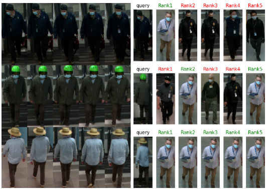

Recent News
Selected Projects
Underground Root Tuber Sensing via a Wi-Fi Mesh Network
Said Elhadi, Tao Wang, Yang Zhao.
ACM SenSys’25, May, 2025, Irvin, CA, USA.
Demo
Said Elhadi, Tao Wang, Yang Zhao.
ACM SenSys’25, May, 2025, Irvin, CA, USA.
Research domain: Wireless Sensing
Our demo was accepted by SenSys 2025, Irvin, CA, USA.Demo

POS: An Operator Scheduling Framework for Multi-model Inference on Edge Intelligent Computing
Ziyang Zhang, Huan Li, Yang Zhao, Changyao Lin, Jie Liu.
ACM/IEEE IPSN’23, May, 2023, San Antonio, USA.
Paper
Ziyang Zhang, Huan Li, Yang Zhao, Changyao Lin, Jie Liu.
ACM/IEEE IPSN’23, May, 2023, San Antonio, USA.
Research domain: Edge Computing
PhD student Ziyang's work was presented in IPSN 2023, San Antonio, Texas, USA.Paper
Containerized Mobile Sensing Simulation Framework for Smart Agriculture
Jingyu Liu, Xinrui Xiao, Yang Zhao, Jie Liu.
ACM SenSys’22, November, 2022, Boston, USA.
Demo
Jingyu Liu, Xinrui Xiao, Yang Zhao, Jie Liu.
ACM SenSys’22, November, 2022, Boston, USA.
Research domain: Cyber Physical System
Undergrad students Jingyu and Xinrui's graduation project was demonstrated at SenSys 2022, Boston, USA.Demo

Person Re-ID Testbed with Multi-Modal Sensors
Guangliang Zhao, Guy Ben-yosef, Jianwei Qiu, Yang Zhao, Prabhu Janakaraj, Sriram Boppana, Austars R. Schnore.
ACM DATA Workshop co-located with SenSys’21 and BuildSys’21, November 17, 2021, Coimbra, Portugal.
Guangliang Zhao, Guy Ben-yosef, Jianwei Qiu, Yang Zhao, Prabhu Janakaraj, Sriram Boppana, Austars R. Schnore.
ACM DATA Workshop co-located with SenSys’21 and BuildSys’21, November 17, 2021, Coimbra, Portugal.
Research domain: Intelligent Sensing, Sensor Fusion
Paper
Mobile X-ray Tomography System with Intelligent Sensing for 3D Chest Imaging
Yang Zhao, E. Tkaczyk, A. Chen, B. Claus, K. Nye, and G. Rao.
SPIE Medical Imaging 2021: Physics of Medical Imaging, February, 2021.
Yang Zhao, E. Tkaczyk, A. Chen, B. Claus, K. Nye, and G. Rao.
SPIE Medical Imaging 2021: Physics of Medical Imaging, February, 2021.
Research domain: Intelligent Sensing, Medical Imaging
Paper
Aerial Inspection of Industrial Assets
GE Global Research Robotics and Machine-to-machine team.
Research project led to incubation of a new business. Research prototype led to the first product in 2017.
GE Global Research Robotics and Machine-to-machine team.
Research project led to incubation of a new business. Research prototype led to the first product in 2017.
Research domain: Industrial IoT, Robotics
News
Radio Tomographic Imaging and Tracking of Stationary and Moving People
Yang Zhao, N. Patwari, J. M. Phillips, and S. Venkatasubramanian.
IPSN, Philadelphia, PA, 2013.
Yang Zhao, N. Patwari, J. M. Phillips, and S. Venkatasubramanian.
IPSN, Philadelphia, PA, 2013.
Research domain: Intelligent Sensing, Wireless Sensor Network
Paper
Retrieval of Cirrus Property with Ground-based Remote Sensing Data
Yang Zhao, Jay Mace, Jennifer Comstock.
Journal of the Atmospheric Sciences, 2011.
Yang Zhao, Jay Mace, Jennifer Comstock.
Journal of the Atmospheric Sciences, 2011.
Research domain: Remote Sensing
PaperSelected Presentations
Teaching
Professional Services
Group Activities
Prof. Zhao attended the CCF CWSN annual meeting with colleagues
in Dalian, Liaoning in October 2023.
in Dalian, Liaoning in October 2023.
Graduate and undergrad students at the Shenzhen University Town
in Shenzhen, Guangdong in July 2022.
in Shenzhen, Guangdong in July 2022.
GRC researchers, family members and friends playing badminton
at Clifton Park, New York in Feburary 2016.
at Clifton Park, New York in Feburary 2016.
Professors and students attending the IEEE SECON Conference
at the Snowbird ski resort in Utah in July 2011.
at the Snowbird ski resort in Utah in July 2011.
Papers
2026
2025
2024
2023
2022
2021
2020
2019
2017
2016
2015
2014
2013
2012
2011
2010
Copyright notices
IEEE Copyrighted material: Personal use of this material is permitted. However, permission to reprint/republish this material for advertising or promotional purposes or for creating new collective works for resale or redistribution to servers or lists, or to reuse any copyrighted component of this work in other works, must be obtained from the IEEE. ACM Copyrighted material: Copyright ACM. This is the author's version of the work. It is posted here by permission of ACM for your personal use. Not for redistribution. The definitive version was published by the ACM.Tools & Resources